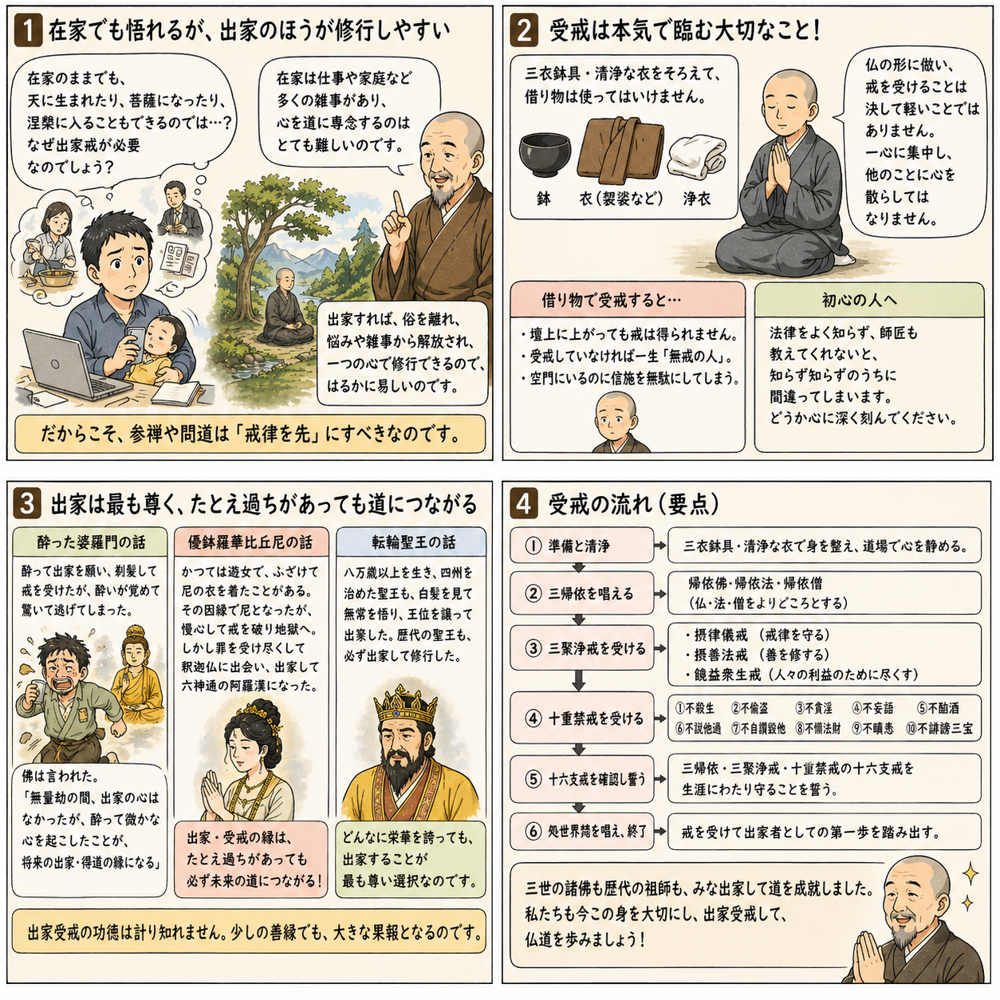

十二巻 巻一覧
正法眼藏第2 受戒
本ページは各巻の紹介ページです。tools/gen_web_volumes.py が doc/正法眼蔵.txt から要点の短い抜粋を載せています（全文の引用ではありません）。
出典（原文）: https://shomonji.or.jp/zazen/doc/genzou.html
原文・現代語訳の全文は 全文ページを参照してください。
この巻の紹介（概要）
道元『正法眼蔵』十二巻の第2篇「受戒」です。禅籍・経典への引用や語の行間が重なりやすいので、一度ですべてを要約に還元しない読み方を推奨します。問答 Bot では巻スコープにこの題名を含めると応答が安定しやすいことがあります。
語彙の足場
- 題名語：巻題「受戒」は、道元が本章で特に扱う論点の看板です。辞書義だけに固定せず、原文中の用例で意味を確かめます。
- 引用と典故：公案・経文の引用は、一字一句の照応（何に答えているか）を押さえると全体が見えやすくなります。
- 学び方：抜粋だけでも音読し、分からない箇所は印を付けて後から問うとよいです。
原文（要点の抜粋）
当巻の冒頭付近からの短い抜粋です。長い引用は載せていません。全文は全文ページを参照してください。出典はリポジトリ内 doc/正法眼蔵.txt です。原文の参照元: https://shomonji.or.jp/zazen/doc/genzou.html
禪苑淸規云、三世諸佛、皆曰出家成道。西天二十八祖、唐土六祖、傳佛心印、盡是沙門。蓋以嚴淨毘尼、方能洪範三界。然則參禪問道、戒律爲先。既非離過防非、何以成佛作祖（禪苑淸規に云く、三世諸佛、皆な出家成道と曰ふ。西天二十八祖、唐土六祖、佛心印を傳ふる、盡く是れ沙門なり。蓋し以て毘尼を嚴淨して方に能く三界に洪範たり。然あれば則ち參禪問道は戒律爲先なり。既に過を離れ非を防ぐに非ずは、何を以てか成佛作祖せん）。
受戒之法、應備三衣鉢具并新淨衣物。如無新衣、浣洗令淨。入壇受戒、不得借賃衣鉢。一心專注、愼勿異緣。像佛形儀、具佛戒律、得佛受用、此非小事。豈可輕心。若借賃衣鉢、雖登壇受戒、竝不得戒。若不曾受、一生爲無戒之人。濫廁空門、虛消信施。初心入道、法律未諳、師匠不言、陷人於此。今茲苦口、敢望銘心（受戒の法は、應に三衣鉢具并びに新淨の衣物を備ふべし。新衣無きが如きは、浣洗して淨からしむべし。入壇受戒には、衣鉢を借賃すること得ざれ。一心專注して、愼んで異緣あること勿れ。佛の形儀に像り、佛の戒律を具す、佛受用を得る、此れ小事に非ず。豈に輕心なるべけんや。若し衣鉢を借賃せば、登壇受戒すと雖も、竝びに得戒せず。若し曾受せずは、一生無戒の人爲らん。濫りに空門に廁り、虛しく信施を消せん。初心の入道は、法律未だ諳んぜず、師匠言はずは、人を此に陷れん。今茲に苦口す、敢て望すらくは心に銘ずべし）。
既受聲聞戒、應受菩薩戒。此入法之漸也（既に聲聞戒を受くれば、應に菩薩戒を受くべし。此れ入法の漸なり）。
西天東地、佛祖相傳しきたれるところ、かならず入法の最初に受戒あり。戒をうけざればいまだ諸佛の弟子にあらず、祖師の兒孫にあらざるなり。離過防非を參禪問道とせるがゆゑなり。戒律爲先の言、すでにまさしく正法眼藏なり。成佛作祖、かならず正法眼藏を傳持するによりて、正法眼藏を正傳する祖師、かならず佛戒を受持するなり、佛戒を受持せざる佛祖あるべからざるなり。あるいは如來にしたがひたてまつりてこれを受持し、あるいは佛弟子にしたがひてこれを受持す、みなこれ命脈稟受するところなり。
いま佛佛祖祖正傳するところの佛戒、ただ嵩嶽曩祖まさしく傳來し、震旦五傳して曹谿高祖にいたれり。靑原、南嶽等の正傳、いまにつたはれりといへども、杜撰の長老等かつてしらざるもあり、もともあはれむべし。
いはゆる應受菩薩戒、此入法之漸也、これすなはち參學のしるべきところなり。その應受菩薩戒の儀、ひさしく佛祖の堂奥に參學するもの、かならず正傳す。疎怠のともがらのうるところにあらず。
その儀は、かならず祖師を燒香禮拜し、應受菩薩戒を求請するなり。すでに聽許せられて、沐浴淸淨にして新淨の衣服を著し、あるいは衣服を浣洗して、花を散じ、香をたき、禮拜恭敬してその身に著す。あまねく形像を禮拜し、三寶を禮拜し、尊宿を禮拜し、諸障を除去し、身心淸淨なることをうべし。その儀ひさしく佛祖の堂奥に正傳せり。
そののち、道場にして和尚、阿闍梨、まさに受者ををしへて禮拜し、長跪せしめて合掌し、この語をなさしむ。
歸依佛、歸依法、歸依僧。
歸依佛陀兩足中尊、歸依達磨離欲中尊、歸依僧伽衆中尊。
歸依佛竟、歸依法竟、歸依僧竟。
如來至眞無上正等覺是我大師。我今歸依、從今已後、更不歸依邪魔外道。慈愍故。［三説。第三疊慈愍故三遍］（如來至眞無上正等覺は是れ我が大師なり。我れ今歸依したてまつる、今より已後、更に邪魔外道に歸依せじ。慈愍したまふが故に。［三説。第三には慈愍故三遍を疊す］）
図解（4コマ・AI生成）
教義の根拠は原文・出典に従い、漫画は比喩の補助に留めてください。

深掘り（読解のコツ）
- 道元文は定義の羅列に見えても、多くの場合誤解への遮断と正伝の姿勢が背骨になっています。
- 「当体」「現成」「即」などの語が出たら、その巻独自の差別相にどう接続しているかをメモしておくとよいです。